From November 8 to November 17, at the 15th China International Aviation and Aerospace Exhibition (called the "China Airshow"), Sony appeared as a supporting unit of the 2024 second "China Airshow Photography Exhibition." It launched the themed event "Sony Aviation Photography Home." This event aims to give professionals and photography enthusiasts friendly service and an airshow shooting experience. Photographers can borrow Sony imaging gear for free, attend talks by professional photographers on site, and get free cleaning and care of Sony gear for Sony members. Sony hopes to give photographers lasting memories at this China Airshow Photography Exhibition.
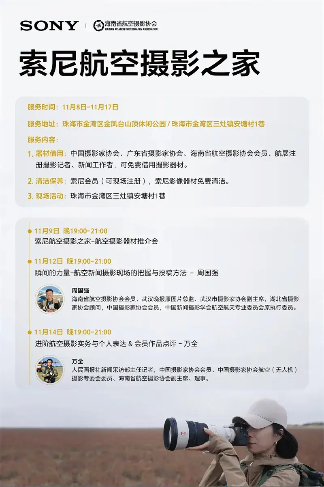
A look at the Sony Aviation Photography Home event
Outstanding autofocus, built for aviation photography
In aviation photography, where fast focus and high resolution matter, cameras such as the Sony Alpha 9M3, Alpha 7R5, and Alpha 1 are widely recognized for their strong performance. At this China Airshow Photography Exhibition, these cameras will show their strength and use their advantages to help professionals and enthusiasts capture stunning moments.
The Alpha 9M3 has an AI processing chip that can identify seven types of subjects, including aircraft. With a burst speed of up to 120 frames per second, it focuses fast and accurately when planes move fast and change course. Its 759 phase-detection points cover about 95.6 percent of the frame. Even at the edge of the frame, it locks the target easily and freezes fast moments clearly. The Alpha 7R5 also has an AI processing chip, and it delivers broader, faster, and more precise Fast Hybrid AF.
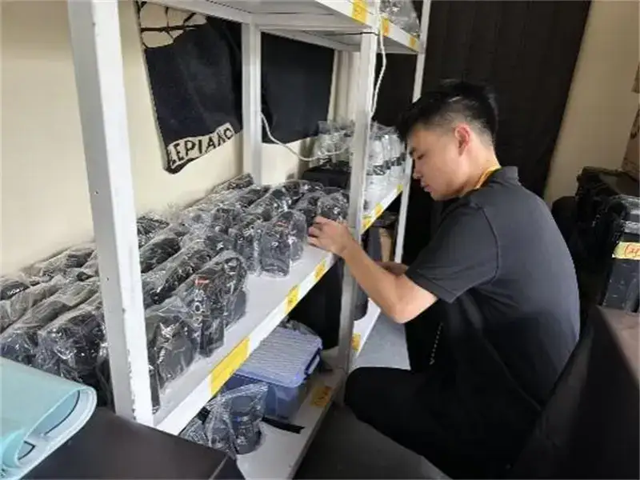
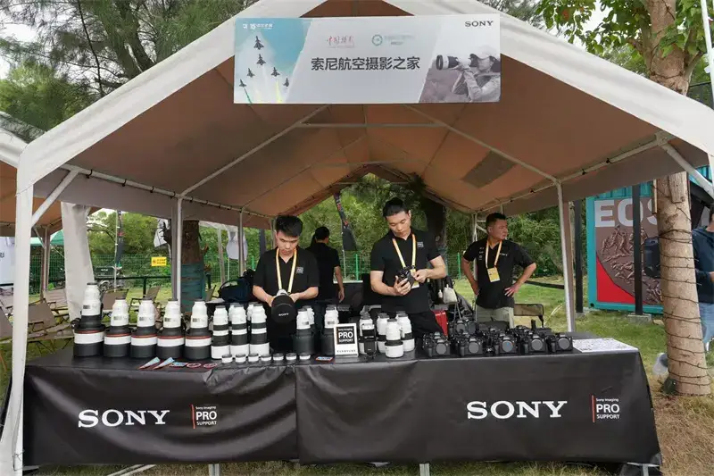
Sony Aviation Photography Home
The Alpha 1 has a full-frame sensor of about 50.1 megapixels and a blackout-free burst of 30 frames per second. It captures the grand moment when a plane crosses the sky with ease. It records both the vivid smoke trails a plane leaves and the dynamic instant of a high-speed dive. Real-time tracking keeps the focus point on the subject and locks the flight path, so focus stays strong even in fast scenes. The Alpha 1 also shoots 8K video with fine detail, to bring the power of the airshow to life.
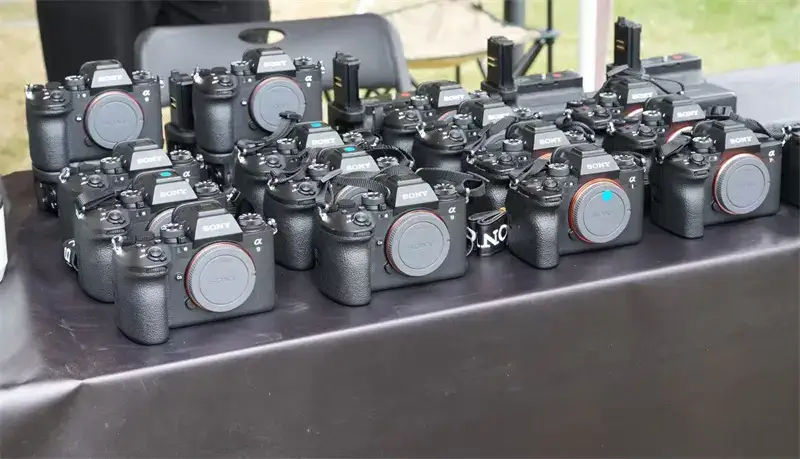
Sony cameras at the airshow
Sony's super-telephoto lens line, such as the FE 600mm F4 GM OSS, FE 300mm F2.8 GM OSS, and FE 200-600mm F5.6-6.3 G OSS, pairs with Sony bodies. Thanks to strong image quality and steady stabilization, it gives higher clarity and color accuracy for long-distance shooting. As Sony's high-end G Master line, these lenses stand out for great optics and high reliability. They use XA (extreme aspherical) elements ground to 0.01-micron precision, which greatly reduces onion-ring birefringence from aspherical elements and supports high resolution. In addition, nano AR coating forms a regular molecular layer on the lens surface. It cuts reflected light, flare, and ghosting sharply, and raises image quality, so photographers on site can take clear, striking airshow shots. The G Master lenses also have XD linear motors for fast, precise, and quiet autofocus. An inner-focus design reduces the effect on body length and raises shooting stability. Together with strong optical stabilization, it cuts blur from hand shake even when you shoot hand-held. This lets photographers create more freely, and still take fine shots in the fast, dynamic airshow scenes.
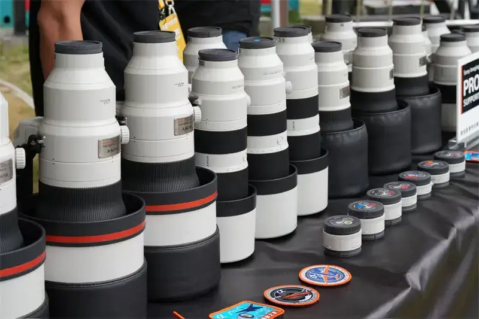
Sony super-telephoto lenses
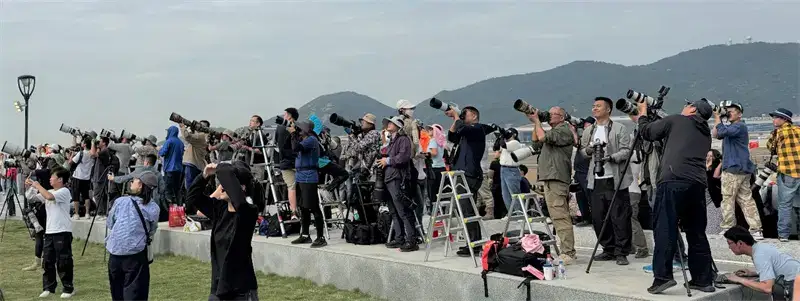
At the photography exhibition
Aviation photography talks, a visual feast with professional photographers
Sony teamed up with the China Airshow Photography Exhibition to set up a rich program under the theme "Sony Aviation Photography Home." It builds a unique airshow photography platform for press photographers, enthusiasts, and airshow visitors. During the event (November 8 to 17), Sony planned three themed talks. On November 9, an aviation gear briefing showed the strong performance of Sony gear. On November 12, Zhou Guoqiang, vice chairman of the Wuhan Photographers Association and a Gold Statue Award winner, gave a talk called "The Power of the Moment" and shared aviation news photography skills. On November 14, Wan Quan, vice chairman and director of the Hainan Aviation Photography Association, gave an in-depth talk on advanced aviation photography practice and critiqued members' work. Through this rich program, Sony hopes to explore the inspiration and craft of aviation imaging with photographers of all backgrounds.
In addition, members of the China Photographers Association, the Guangdong Photographers Association, and the Hainan Aviation Photography Association, plus registered airshow press photographers and journalists, can borrow gear for free at the Sony Aviation Photography Home. They can feel the unique advantage and appeal of Sony gear for capturing professional images.
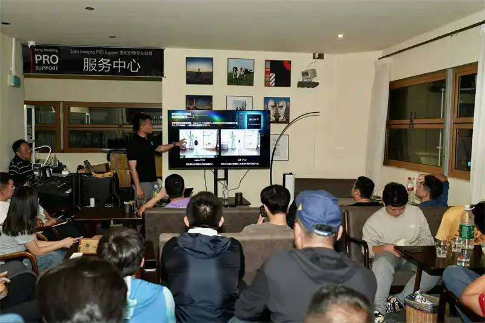
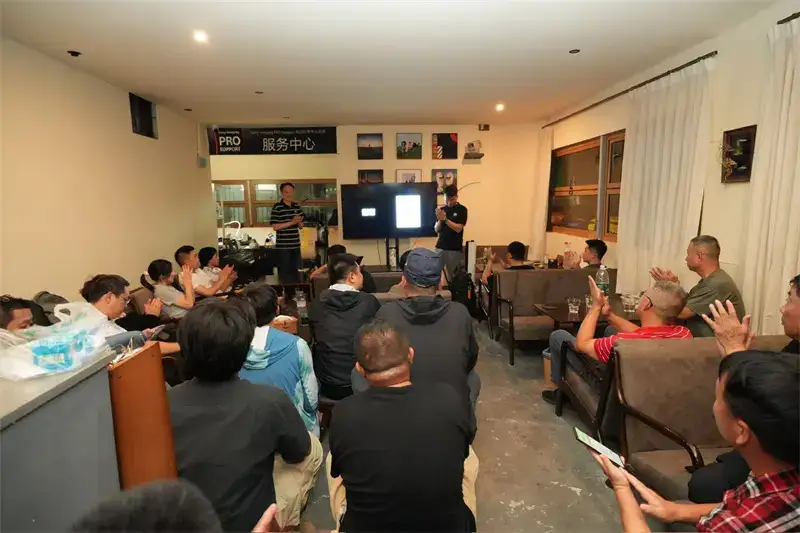
At the aviation gear briefing
Sony members can also get free cleaning and care of their Sony gear on site. This keeps their equipment in good shape throughout the China Airshow, so they do not miss striking moments.
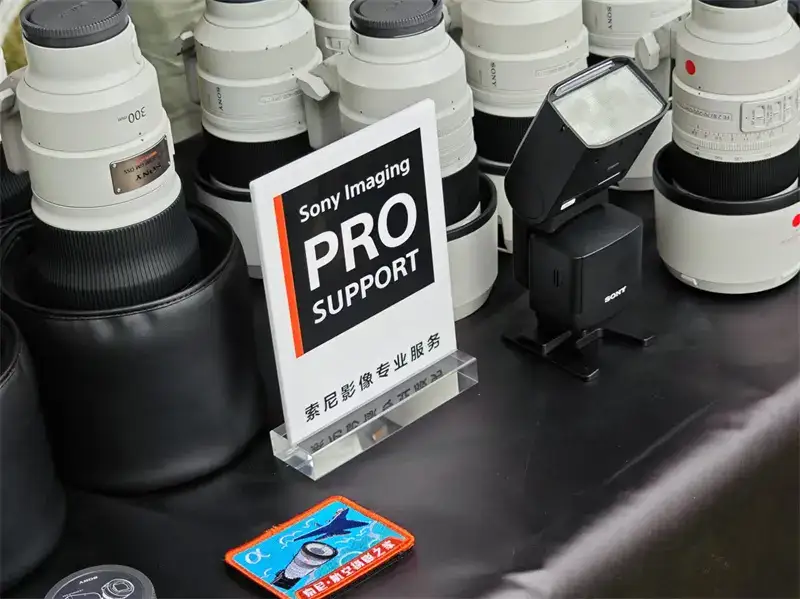
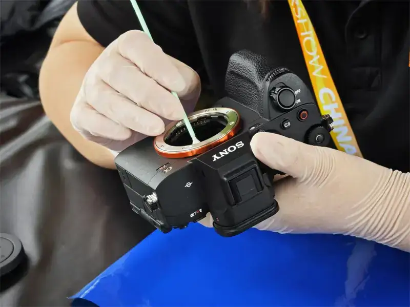
Sony Imaging Professional Service
Set out on a visual journey, and record the grand skies
Sony joins the China Airshow Photography Exhibition as a supporting unit. With strong imaging technology and innovation, it will give photographers high-performance gear to help them make visually striking work. The China Airshow is a world-known aviation event that brings together high-level flying skill and stunning shows. This makes a real challenge for photography. Sony gear led by the Alpha 9M3 and Alpha 1 is steady and strong, and it will help photographers shoot the airshow with greater ease.
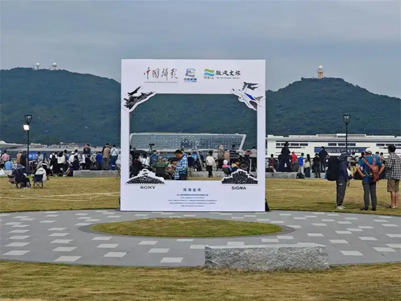
At the China Airshow Photography Exhibition